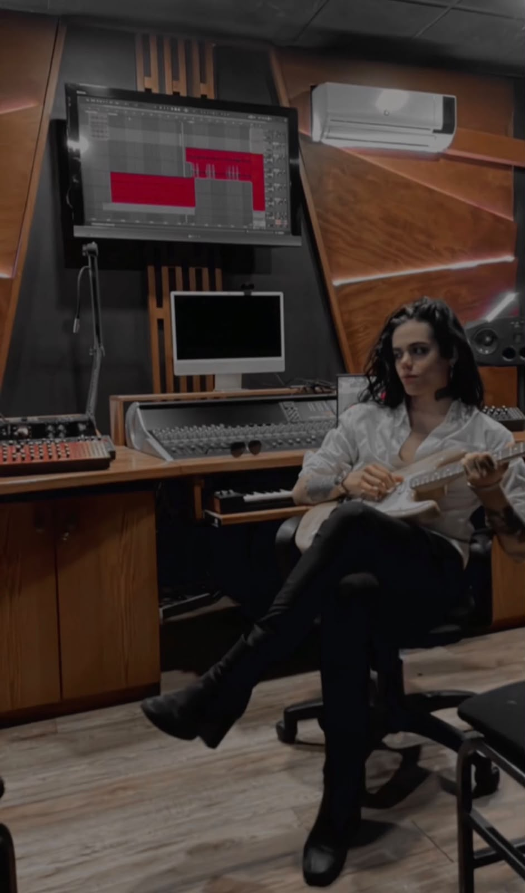
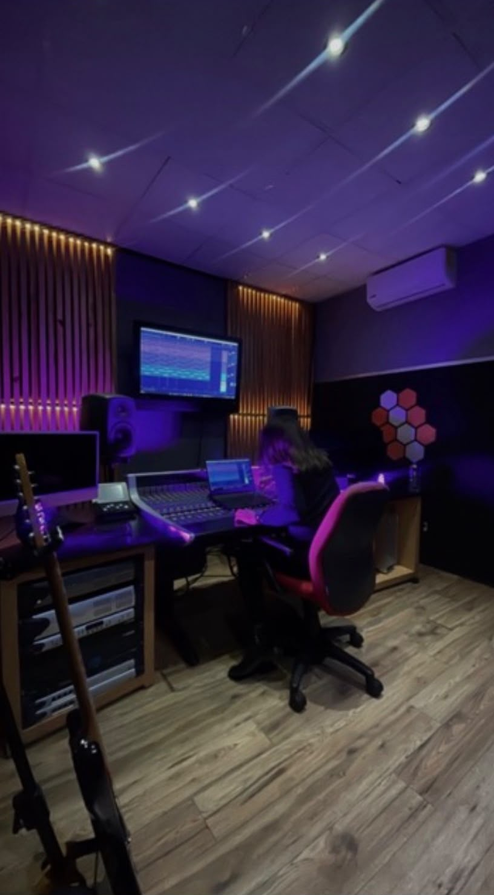
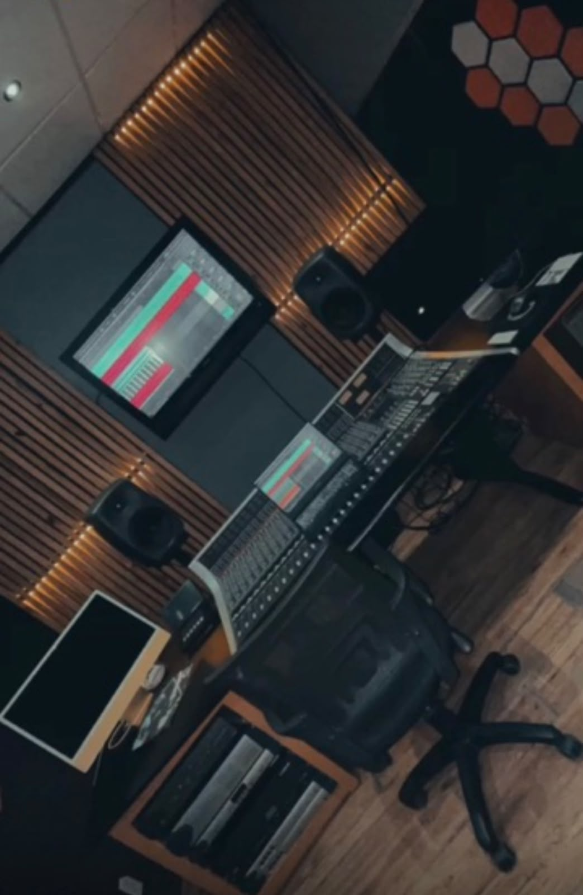
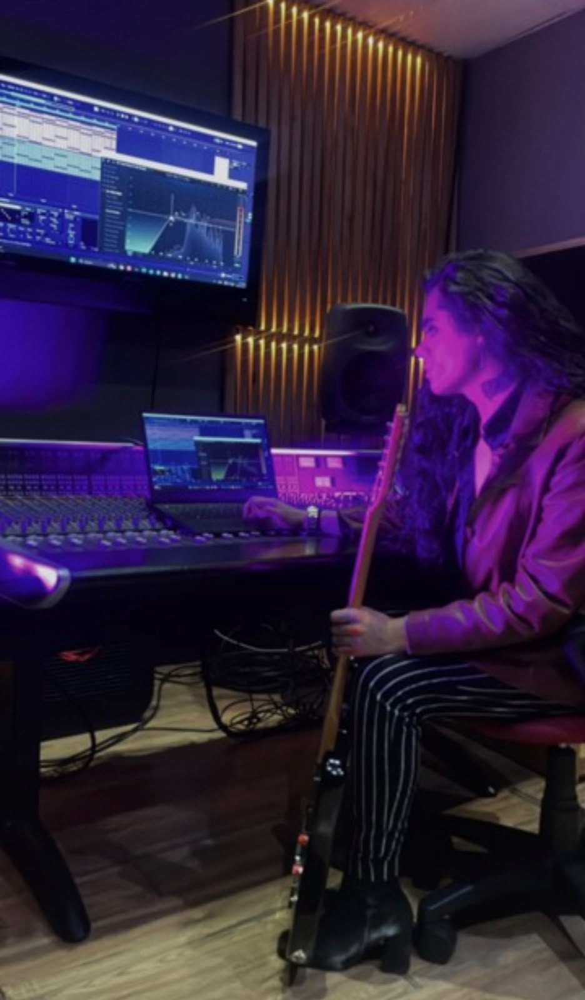

Audio Engineer · Mixing & Mastering
Shaping
the perfect sound
British-Mexican audio engineer, native bilingual, with 7+ years of experience in dubbing, music and podcast production, working with some of the most recognized voice actors in Mexico and Latin America.
Samples
Listen to my work
A few audio samples from mixing, mastering and voice over projects. Play online or download the files.
About me
Musical training, technical ear
I'm Marcus Escalona, a British-Mexican audio engineer, native in both English and Spanish. I speak Spanish with a neutral Mexican accent and English with a British (UK) accent. My career began with formal studies in music and audio engineering, which gave me the artistic sensibility and the technical mastery needed for recording, mixing, mastering and sound post-production.
Throughout my career I've worked as a production assistant, cameraman, lighting engineer and audio engineer, collaborating with the largest movie chains and recognized dubbing artists across Mexico and Latin America. Today I work remotely for studios in the United States, mixing and mastering music projects and podcasts covering sports, film and comedy.
Specialties
- Mixing & mastering
- Dubbing engineering
- Podcast production
- Studio recording
- Audio post-production for video
- Bilingual EN-ES translation / voice over
Background
Professional experience
Black Fox Productions
2020 — PresentAudio Engineer
📍 Los Angeles, CA
Digital audio studio supporting artists worldwide. Hired in 2020 due to the pandemic, working remotely ever since. Responsible for audio mixing and mastering for music projects and multiple podcasts covering sports, film and comedy.
Black Media Productions
Aug 2017 — Mar 2019Audio Engineer and Assistant
📍 Mexico City
My job was primarily specialized as a production assistant, aiming to maximize my knowledge and potential in the field. On multiple occasions I also worked as a cameraman and lighting engineer due to my proximity to the field. Here I had the opportunity to collaborate with the largest movie chains and dubbing artists in Mexico and Latin America.
Collaborations
I've worked with voices you know
Throughout my career in dubbing I've had the privilege of collaborating on projects alongside some of the most recognized voice actors in Mexico and Latin America, including:
My workspace
Professional studios of my own
Recording, mixing and mastering done in acoustically treated rooms, with professional monitoring and broadcast-grade equipment.




Let's work together
Have a project in mind?
Available for mixing, mastering, dubbing, bilingual voice over and podcast production projects, remote or on-site.